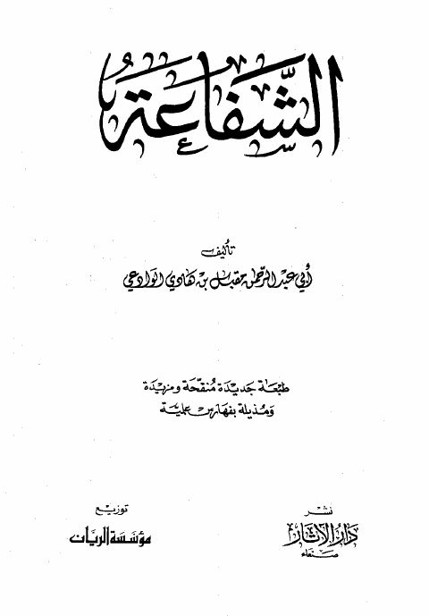

Downloads need an internet connection.
الشفاعة
Authors: مقبل بن هادي الوادعي
Publishers: مؤسسة الريان
**▫️ العنوان: الشفاعة** ▪️ المؤلف: #مقبل_بن_هادي_الوادعي ▫️ الطبعة: 3 ▪️ عدد الأجزاء: 1 ▫️ الصفحات: 286 ▪️ نوع الوعاء: #كتاب ▫️ التصنيف الرئيسي: #العقيدة_والمذاهب_والأديان ▪️ التصنيف الفرعي: #اليوم_الآخر_الشفاعة ۪